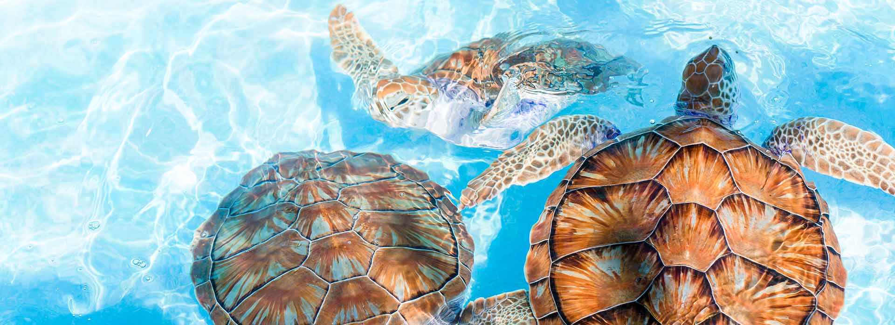

Sri Lanka Turtle Population
There are about 250 species in Sri Lanka. Among which 7 are species that belong to sea. Out of the 7 sea turtle species 5 can be found in Sri Lanka. The remaining 243 species belong to freshwater, marine and terrestrial.
5 species of turtles that are found in Sri lanka:
- The Green turtle
- Olive Ridley
- Leatherback
- Hawksbill
- Loggerhead
Sea Turtles

We can find sea turtles in any region except for polar region. There are seven existing sea turtles:
- Green Turtle
- Loggerhead
- Flatback
- Hawksbill
- Leatherback
- OLive Ridley
- Kemp's Ridley
Sea turtles have jaws modified like beak as they have no teeth, to adapt to their eating habits. Sea turtles can hear clearly at low frequencies because they have no ears but eardrums underneath their skin. Sea turtles have clear vision under water but they are short-sighted on land. They have a streamlined shaped body with large flippers which help them adapt to the life underwater.
Fresh Water Turtles
There are 4 species of fresh water turtles in Sri Lanka:
- Black Turtle
- Parker’s Black Turtle
- Flap Shell Turtle
- Red-eared slider
These species can be found in many aquatic and semi-aquatic habitats, like wetlands, running water, stagnant water. Their main source of food is mostly aquatic and semi aquatic plants, many invertebrates, fruits and animal feces.
Terrestrial Turtles
Sri Lankan star tortoise has a life span of about 30 years. Female tortoise are mostly larger than males, where female tortoise growth is about 10 inches while male tend to grow about 8 inches in length.
Terrestrial turtles spend most of their time on dry land but are typically found in or near shallow water. Asian terrestrial turtles are called box turtles because they can withdraw their head and limbs fully into their shells and have a hinge on the bottom part (the plastron) of their shell that they can close tightly against the top part (the carapace) so that they are completely enclosed, as if in a box.